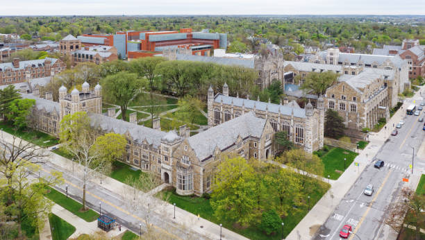

University of Michigan
(734) 764-7433 -- Jefferson Street, Ann Arbor



The college-choice process can be challenging. Making the right decision
takes time, effort, and information…all of which you will find help with here.
We have made an outstanding commitment to offering a first-year experience like none other, from an
extraordinary range of events and activities to learning communities to an education that moves well beyond
the classroom, blending experience and intellect, fact and theory, life and academics into a seamless whole.
Loading quote...
Academic Programs
Student Life
Student Life’s University Housing provides students with much more than simply a place to study, sleep, or work; residence halls include lounges and recreational areas, events and learning programs. And for those living off-campus, Beyond the Diag has information about neighborhoods, roommates, and a Housing Listing Service. Student Life's award-winning Michigan Dining> offers a wide variety of delicious and healthy selections in 7 dining halls and 17 markets and cafes all across campus; and Student Life's University Unions includes the Michigan League, Michigan Union, and Pierpont Commons which serve as the "living room" of the campus community, providing conveniences and amenities, places to eat, work, study, meet, and connect.